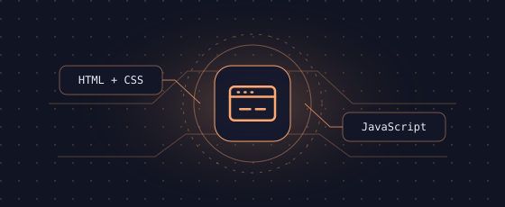
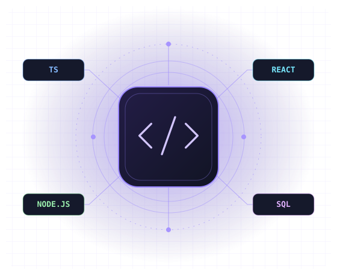
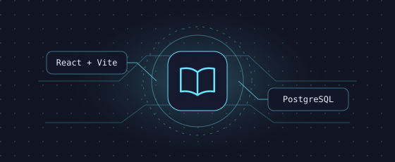
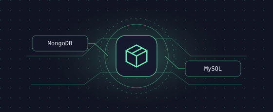
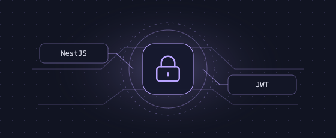

Casa de Carnes
Landing page para uma casa de carnes, construída com as tecnologias fundamentais da web.
PORTFÓLIO DE DESENVOLVIMENTO
Desenvolvedor full-stack
Construo interfaces web e as APIs que fazem tudo funcionar, do primeiro clique à persistência dos dados.
BELO HORIZONTE · MG

01 / PORTFÓLIO
Quatro aplicações que mostram como trabalho com interfaces, APIs e dados.

Landing page para uma casa de carnes, construída com as tecnologias fundamentais da web.

Catálogo de livros com cadastro, consulta, edição e remoção. A interface React se comunica com uma API Express que persiste os dados no PostgreSQL.

API para estoque e vendas. Produtos e estoque ficam no MongoDB. Clientes, pedidos e vendas são modelados no MySQL.

API de gerenciamento de usuários com autenticação JWT, hash de senhas com bcrypt e rotas protegidas por guards do NestJS.
02 / FERRAMENTAS
As ferramentas por trás dos projetos, organizadas por camada.
Da estrutura da página à interação no navegador.
APIs REST, rotas protegidas e gerenciamento de usuários.
Modelagem relacional e por documentos, conforme o domínio.
03 / SOBRE MIM
Sou desenvolvedor full-stack de Belo Horizonte. Nos meus projetos, trabalho desde a interface até a autenticação e a modelagem de dados.